Plano de conteúdo · Novembro 2026
Novembro é o mês de encher a cadeira.
Calendário do mês, stories de todo dia pra equipe, roteiros dos 7 Reels, as 4 artes do feed, campanha Seg a Qua e perfil novo. Plano Essencial + campanha de bônus.
Ryan Coimbra & FonteneleCEOs · House do Creator
Escopo · Plano Essencial
Tudo que foi contratado, com data marcada.
Plano Essencial (R$ 1.000/mês) + uma campanha de vendas de bônus. Cada item do contrato tem dia e responsável neste material.
4 visitas no mês (1 por semana)
06/11, 13/11, 19/11 e 25/11
3 diárias de Reels: 7 Reels
Visitas 1, 2 e 4 · R1 a R7 publicados de 10 a 30/11
1 diária de fotos pro feed
Visita 3, 19/11 · fotos de A3, A4 e dos meses seguintes
4 artes ou carrosséis
A1 a A4, prontas neste material
Legendas, calendário e Stories
Calendário de 11 posts, legendas e pauta de stories de 04 a 30/11
Bio e capas de destaques novas
No ar em 09/11, com 8 capas no padrão novo
Relatório mensal
Entregue em 30/11, com o que vira pauta de dezembro
Bônus: 1 campanha de vendas
Seg a Qua Cheia · 50% no 1º corte, de 09 a 30/11
ED BARBEARIA × HOUSE DO CREATOR02
Campanha do mês · Bônus
Seg a Qua Cheia: 50% no 1º corte.
Segunda a quarta são os dias mais vazios. A promoção que a ED já tem vira campanha do mês, com peça no feed, stories em todo dia de campanha e Reels apontando pro app.
Mecânica
50% no primeiro corte, agendando pelo app
Vale de segunda a quarta
Período: 09 a 30/11 (10 dias de campanha)
Pedir ao cliente: “como conheceu a ED?”
Peças
A1 no feed, fixada em 09/11
Story-01 e story-02 em todo dia de campanha
R5 (POV do app) e R1 com a oferta na legenda
Bio e destaque AGENDAR com a oferta
O que medir
Agendamentos de seg a qua no app, antes x depois
Quantos usaram o 50%
Cliques no link da bio
Quanto desses clientes voltou em 20 dias
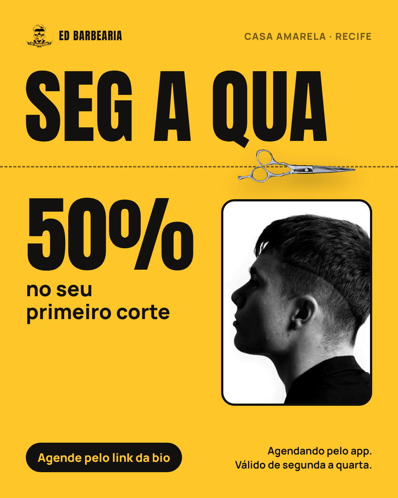
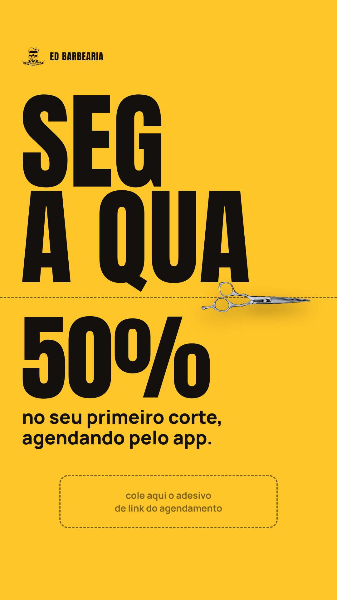
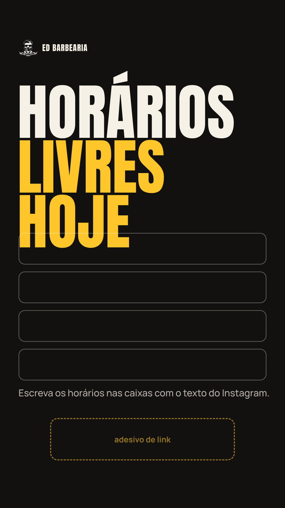
Em 27/11 (Black Friday) a gente não cria desconto novo: a mensagem é “a black da ED é toda semana, de segunda a quarta”. Em 30/11 a campanha passa o bastão pra agenda de dezembro.
ED BARBEARIA × HOUSE DO CREATOR03
Cronograma de produção
Quando a House vai na ED.
Uma visita por semana. Em toda visita a gente grava stories de bastidor, além do que está na pauta.
05/11 · qui
Reunião de pauta
Pauta aprovada com o Ed
06/11 · sex
Visita 1 · Diária de Reels
Grava R1, R2 e R3 + stories da visita
09/11 · seg
Perfil novo no ar
Bio, 8 destaques e A1 fixada
13/11 · sex
Visita 2 · Diária de Reels
Grava R4 e R5 + stories da visita
19/11 · qui
Visita 3 · Diária de fotos
Ensaio: cortes, ambiente, equipe e o Ed (fotos de A3 e A4)
25/11 · qua
Visita 4 · Diária de Reels
Grava R6 e R7 + stories da visita
30/11 · seg
Relatório
Alcance, seguidores, agendamentos e pauta de dezembro
Antes de cada visita
Agendar no app 2 clientes para o horário da gravação (um para corte, um para barba) e avisar que vão aparecer no Instagram. Pedir autorização de imagem, principalmente de crianças.
ED BARBEARIA × HOUSE DO CREATOR04
Calendário · Novembro 2026
Feed do mês: 11 posts.
seg
ter
qua
qui
sex
sáb
dom
9
A1 Campanha Seg a Qua: 50% no 1º corte
Seg a Qua 50%
10
R1 Do zero ao degradê
Seg a Qua 50%
12
A2 Agendar na ED leva 3 toques + tabela
14
R2 Antes e depois: chegou pedindo socorro
17
R3 O Ed responde: qual corte pro seu rosto
Seg a Qua 50%
19
R4 Movimentos da navalha, parte 2
Visita 3
21
A3 Quem senta na cadeira da ED, volta (o Ed)
24
R5 POV: agendou pelo app e não pegou fila
Seg a Qua 50%
28
R6 Barba completa: o ritual
30
R7 Pai e filho na mesma cadeira
Seg a Qua 50%
Branco: Reels · Amarelo: arte/carrossel · Postar às 18h30
Stories todos os dias (próximas páginas)
ED BARBEARIA × HOUSE DO CREATOR05
Feed · Ordem de postagem
7 Reels e 4 artes, três por semana.
Terça, quinta e sábado às 18h30, com segunda nos dias de estreia. Os 3 fixados ficam: campanha, como agendar e o Ed.
| 09/11 | seg | A1 | Arte | Campanha Seg a Qua: 50% no 1º corte | FIXAR |
| 10/11 | ter | R1 | Reels | Do zero ao degradê | |
| 12/11 | qui | A2 | Carrossel | Agendar na ED leva 3 toques + tabela | FIXAR |
| 14/11 | sáb | R2 | Reels | Antes e depois: chegou pedindo socorro | |
| 17/11 | ter | R3 | Reels | O Ed responde: qual corte pro seu rosto | |
| 19/11 | qui | R4 | Reels | Movimentos da navalha, parte 2 | |
| 21/11 | sáb | A3 | Carrossel | Quem senta na cadeira da ED, volta (o Ed) | FIXAR |
| 24/11 | ter | R5 | Reels | POV: agendou pelo app e não pegou fila | |
| 26/11 | qui | A4 | Carrossel | Qual corte é o seu? | |
| 28/11 | sáb | R6 | Reels | Barba completa: o ritual | |
| 30/11 | seg | R7 | Reels | Pai e filho na mesma cadeira | |
ED BARBEARIA × HOUSE DO CREATOR06
Stories · Regras da equipe
Stories todo dia, feitos pela equipe da ED.
As próximas páginas têm o que postar em cada dia. Leva 5 minutos e quem estiver livre entre um cliente e outro pode fazer.
Sempre vertical e na luz da janela ou do espelho
Nada de marca d’água de app de edição
Todo story de oferta com o adesivo de link do agendamento
Marcar @edbarbearia e o barbeiro do corte
Pedir autorização antes de filmar o cliente (e dos pais, no kids)
3 a 5 stories por dia: melhor pouco e todo dia do que muito num dia só
Usar as artes story-01 a story-04 que estão na pasta de artes
Repostar todo cliente que marcar a ED
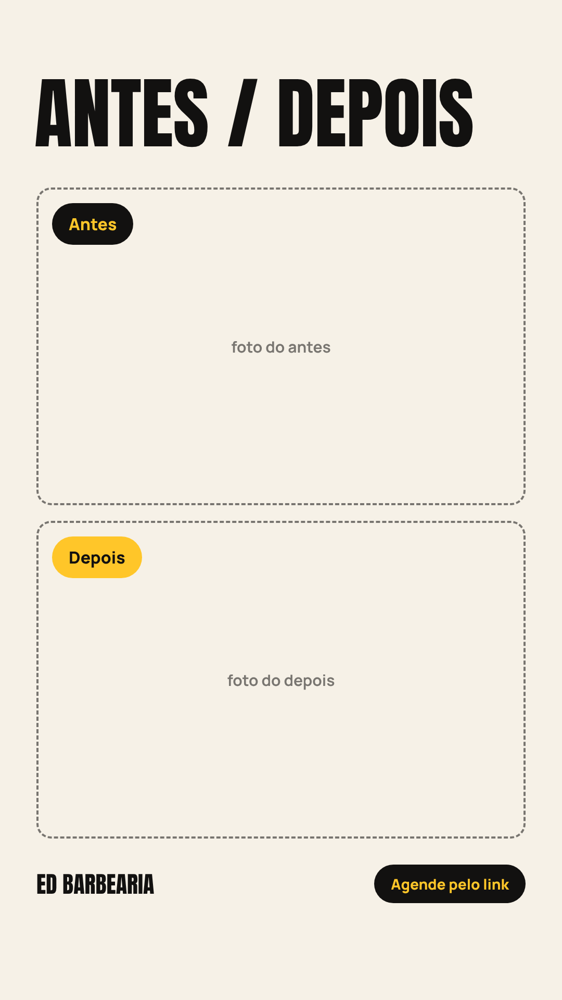
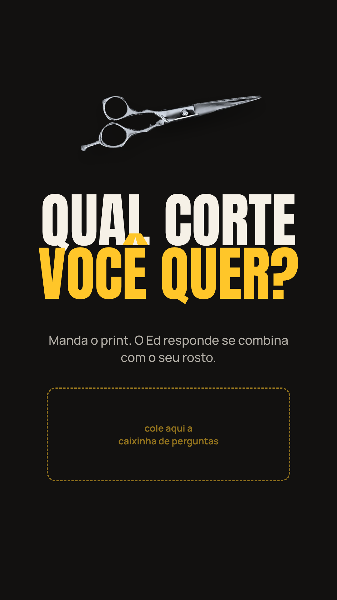
Os modelos de story já têm o espaço marcado para o adesivo de link, a caixinha ou as fotos. É só abrir no Instagram e completar.
ED BARBEARIA × HOUSE DO CREATOR07
Stories · 04/11 a 10/11
Stories do dia 04/11 a 10/11
| Dia | Tema | O que gravar | Adesivo / chamada |
| 04/11 qua |
Bom dia da ED |
1. Abrindo a porta e a primeira cadeira do dia · 2. Primeiro cliente sentando (pedir autorização) · 3. Resultado do primeiro corte, de perfil |
Enquete: degradê ou social? + link de agendar |
| 05/11 qui |
Bastidor técnico PAUTA |
1. Close de 10 s da máquina ou navalha trabalhando · 2. Mão do barbeiro fazendo o contorno · 3. Resultado final no espelho |
Arte story-04 com caixinha: qual corte você quer? |
| 06/11 sex |
Dia de gravação VISITA 1 |
1. Bastidor da House gravando (luz, celular, cadeira) · 2. Cliente do Reels antes de começar · 3. “Tem novidade chegando no perfil” |
Arte story-03 (antes/depois) do cliente do dia |
| 07/11 sáb |
Casa cheia |
1. Timelapse de 15 s do movimento · 2. 3 resultados do dia em sequência · 3. Barbeiro mostrando a agenda de segunda |
Link de agendar: “segunda já tem horário” |
| 08/11 dom |
Repost de clientes FECHADO |
1. Repostar stories em que clientes marcaram a @edbarbearia · 2. Story de texto: “Amanhã começa a semana do 50%” |
Lembrete de evento: 09/11 |
| 09/11 seg |
Estreia da campanha e do perfil novo CAMPANHA |
1. Arte story-01 (Seg a Qua · 50%) · 2. Tela do perfil novo mostrando os destaques · 3. Arte story-02 com os horários livres de hoje |
Link de agendar em todos |
| 10/11 ter |
Horários livres + R1 CAMPANHA |
1. Arte story-02 com horários de hoje · 2. Compartilhar o Reels R1 · 3. Cliente em 10 s: “como ficou?” |
Link de agendar |
ED BARBEARIA × HOUSE DO CREATOR08
Stories · 11/11 a 17/11
Stories do dia 11/11 a 17/11
| Dia | Tema | O que gravar | Adesivo / chamada |
| 11/11 qua |
Último dia da semana do 50% CAMPANHA |
1. Story de texto: “só até hoje nesta semana” · 2. Resultado do dia · 3. Arte story-01 |
Contagem regressiva até 19h + link |
| 12/11 qui |
Como agendar (A2) |
1. Repostar o carrossel A2 · 2. Gravar a tela do celular agendando de verdade no app (20 s) · 3. “Pronto, marcado” |
Link de agendar |
| 13/11 sex |
Dia de gravação VISITA 2 |
1. Bastidor da gravação · 2. Antes do cliente do Reels · 3. Depois, de perfil |
Arte story-03 + link |
| 14/11 sáb |
Casa cheia + R2 |
1. Compartilhar o Reels R2 · 2. Timelapse do sábado · 3. Enquete: barba cheia ou só o contorno? |
Link de agendar |
| 15/11 dom |
Pergunte ao Ed FECHADO |
1. Story de texto: “Manda tua dúvida pro Ed” |
Caixinha de perguntas (respostas na segunda) |
| 16/11 seg |
O Ed responde CAMPANHA |
1. Ed respondendo 3 perguntas da caixinha em vídeo selfie (até 30 s cada) · 2. Arte story-01 |
Link de agendar |
| 17/11 ter |
Horários livres + R3 CAMPANHA |
1. Arte story-02 com horários · 2. Compartilhar o Reels R3 · 3. Resultado do dia |
Link de agendar |
ED BARBEARIA × HOUSE DO CREATOR09
Stories · 18/11 a 24/11
Stories do dia 18/11 a 24/11
| Dia | Tema | O que gravar | Adesivo / chamada |
| 18/11 qua |
Espaço kids CAMPANHA |
1. Criança na cadeira (só com autorização dos pais) · 2. Resultado com o pai ou a mãe · 3. “Último dia do 50% nesta semana” |
Contagem regressiva + link |
| 19/11 qui |
Dia do ensaio VISITA 3 |
1. Bastidor das fotos · 2. Cada barbeiro se apresenta: nome e corte favorito (1 story cada) · 3. Compartilhar o Reels R4 |
Enquete: qual barbeiro você já conhece? |
| 20/11 sex |
Consciência Negra FERIADO |
1. Se abrir: “aberto no feriado” + horários livres · 2. Se fechar: aviso e link para agendar sábado |
Confirmar com o Ed até 18/11 |
| 21/11 sáb |
Um dia com o Ed (A3) |
1. Repostar o carrossel A3 · 2. Ed chegando e preparando a bancada · 3. Ed revisando um acabamento |
Link de agendar |
| 22/11 dom |
Repost + teaser FECHADO |
1. Repostar clientes que marcaram a ED · 2. “Amanhã volta o 50% no 1º corte” |
Lembrete de evento: 23/11 |
| 23/11 seg |
Abertura da semana CAMPANHA |
1. Arte story-01 · 2. Arte story-02 com horários · 3. Bastidor da manhã |
Link de agendar |
| 24/11 ter |
Prova real + R5 CAMPANHA |
1. Compartilhar o Reels R5 · 2. Depoimento de quem usou o 50% (10 a 15 s) · 3. Resultado do dia |
Link de agendar |
ED BARBEARIA × HOUSE DO CREATOR10
Stories · 25/11 a 30/11
Stories do dia 25/11 a 30/11
| Dia | Tema | O que gravar | Adesivo / chamada |
| 25/11 qua |
Última quarta do 50% no mês VISITA 4 |
1. Bastidor da gravação · 2. “Última quarta do mês com 50%” · 3. Antes e depois do dia |
Contagem regressiva + link |
| 26/11 qui |
Qual corte é o seu (A4) |
1. Repostar o carrossel A4 · 2. Enquete com os 3 cortes · 3. Caixinha: manda o print do corte que você quer |
Arte story-04 + link |
| 27/11 sex |
A nossa black é toda semana BLACK FRIDAY |
1. Story de texto: “A Black da ED é de segunda a quarta: 50% no 1º corte” · 2. Horários livres de sábado · 3. Resultado do dia |
Link de agendar |
| 28/11 sáb |
Casa cheia + R6 |
1. Compartilhar o Reels R6 · 2. Timelapse do sábado · 3. “Dezembro lota: já dá pra marcar” |
Link de agendar |
| 29/11 dom |
Retrospectiva do mês FECHADO |
1. Os 3 melhores cortes de novembro · 2. Agradecimento aos clientes |
Caixinha: o que você quer ver em dezembro? |
| 30/11 seg |
Agenda de dezembro aberta CAMPANHA |
1. Compartilhar o Reels R7 · 2. Arte story-01 · 3. “A agenda de dezembro já está aberta no app” |
Link de agendar |
ED BARBEARIA × HOUSE DO CREATOR11
Roteiros de Reels · R1 e R2
Roteiros: gancho nos 3 primeiros segundos.
R1grava 06/11 · posta 10/11
Do zero ao degradê
Técnica (o que mais roda no perfil) · 20 a 35 s · áudio em alta da semana
Gancho (0 a 3 s)
Close na nuca com a máquina ligando. Texto: “Do zero ao degradê em 30 segundos.”
Cenas
Cliente sentando, cabelo antes (2 s)
Máquina abrindo o degradê, 4 cortes rápidos de 2 s
Pente e tesoura no topo
Contorno na navalha (close)
Giro da cadeira mostrando o resultado
Legenda
Degradê da ED do começo ao fim. Agende pelo link da bio. Segunda a quarta, 50% no primeiro corte.
R2grava 06/11 · posta 14/11
Antes e depois: chegou pedindo socorro
Antes e depois · 20 a 35 s · áudio em alta da semana
Gancho (0 a 3 s)
Cliente olhando o próprio cabelo no espelho com cara de dúvida. Texto: “Ele chegou assim…”
Cenas
Antes em 3 ângulos (frente, perfil, nuca)
Ed explicando o que vai fazer em 1 frase
Corte acelerado
Depois nos mesmos 3 ângulos
Reação do cliente
Legenda
Chegou pedindo socorro, saiu pronto pra foto. Marca aquele amigo que precisa. Agende pelo link da bio.
ED BARBEARIA × HOUSE DO CREATOR12
Roteiros de Reels · R3 e R4
Roteiros: gancho nos 3 primeiros segundos.
R3grava 06/11 · posta 17/11
O Ed responde: qual corte pro seu rosto
O Ed como rosto da marca · 20 a 35 s · áudio em alta da semana
Gancho (0 a 3 s)
Ed olhando pra câmera: “Rosto redondo? Não faz esse corte.”
Cenas
Ed explica 3 formatos de rosto (redondo, quadrado, alongado)
Para cada um, 1 corte indicado com foto ou cliente real
Fecha: “Não sabe o seu? Senta aqui que eu te digo.”
Legenda
Qual é o seu formato de rosto? Comenta aí que o Ed responde. Agende pelo link da bio.
R4grava 13/11 · posta 19/11
Movimentos da navalha, parte 2
Continuação do Reels de 16,6 mil views · 20 a 35 s · áudio em alta da semana
Gancho (0 a 3 s)
Close na navalha abrindo. Texto: “Parte 2, porque vocês pediram.”
Cenas
Navalha sendo montada
3 movimentos em close, com o Ed narrando o nome de cada um
Resultado do contorno
Ed: “Quer aprender? Destaque CURSO.”
Legenda
Os movimentos da navalha, parte 2. Salva pra ver depois. Agende pelo link da bio.
ED BARBEARIA × HOUSE DO CREATOR13
Roteiros de Reels · R5 e R6
Roteiros: gancho nos 3 primeiros segundos.
R5grava 13/11 · posta 24/11
POV: agendou pelo app e não pegou fila
Conversão (app + campanha) · 20 a 35 s · áudio em alta da semana
Gancho (0 a 3 s)
Tela do celular agendando. Texto: “POV: você agendou e não pegou fila.”
Cenas
Gravação da tela escolhendo serviço e hora
Cliente chegando e já sentando na cadeira
Corte rápido
Resultado + texto: “segunda a quarta, 50% no 1º corte”
Legenda
Sem fila, sem esperar. Agende pelo link da bio. Segunda a quarta, 50% no primeiro corte pelo app.
R6grava 25/11 · posta 28/11
Barba completa: o ritual
Técnica e experiência · 20 a 35 s · áudio em alta da semana
Gancho (0 a 3 s)
Toalha quente subindo do rosto do cliente (close).
Cenas
Toalha quente
Espuma ou óleo
Navalha desenhando a linha
Acabamento e finalização
Cliente passando a mão na barba
Legenda
Barba feita do jeito certo. Agende cabelo + barba por R$ 80 pelo link da bio.
ED BARBEARIA × HOUSE DO CREATOR14
Roteiros de Reels · R7
Roteiros: gancho nos 3 primeiros segundos.
R7grava 25/11 · posta 30/11
Pai e filho na mesma cadeira
Espaço kids e família (com autorização) · 20 a 35 s · áudio em alta da semana
Gancho (0 a 3 s)
Pai e filho sentados lado a lado. Texto: “Quem cortou melhor?”
Cenas
Os dois chegando juntos
Corte do filho no espaço kids
Corte do pai
Os dois no espelho no final
Texto: “A agenda de dezembro já está aberta”
Legenda
Programa de pai e filho na ED. Dezembro lota: já dá pra marcar pelo link da bio.
Regra dos Reels da ED:
mostrar a técnica, terminar no resultado
e chamar pro app na legenda.
ED BARBEARIA × HOUSE DO CREATOR15
Feed · A1 · 09/11
A1 · Campanha Seg a Qua
Legenda
Segunda a quarta a ED tem 50% no seu primeiro corte. É só agendar pelo app, escolher o horário e sentar na cadeira. Link na bio. 📍 Rua Paula Batista, 604, Casa Amarela.
1080 × 1350 px · arquivos na pasta artes. As fotos dos cortes são provisórias: trocar pelas do ensaio de 19/11.
ED BARBEARIA × HOUSE DO CREATOR16
Feed · A2 · 12/11
A2 · Agendar em 3 toques
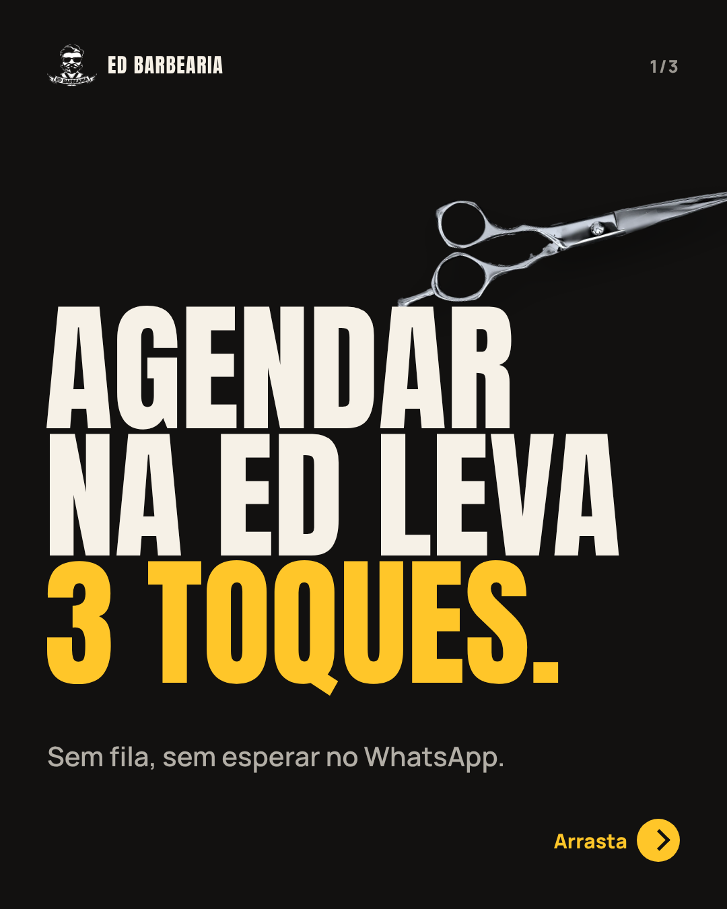
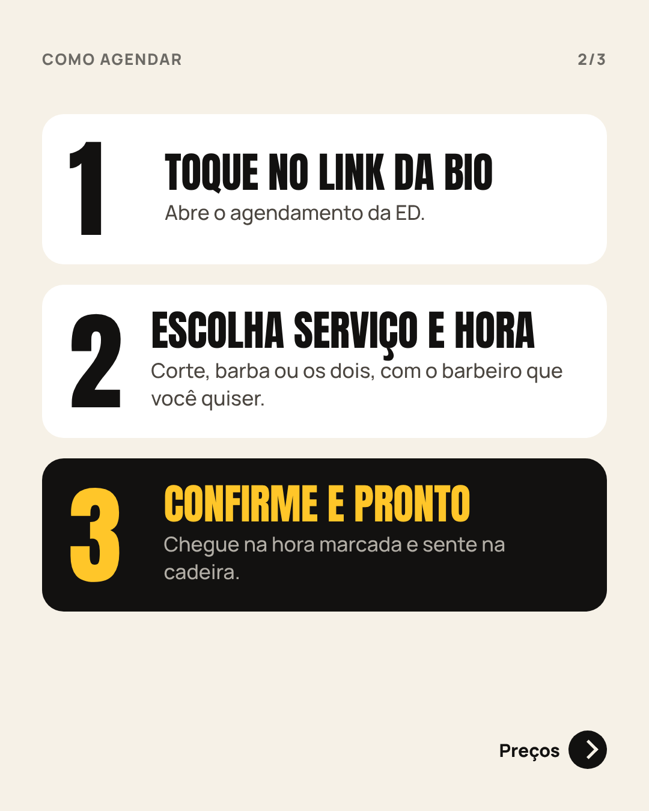
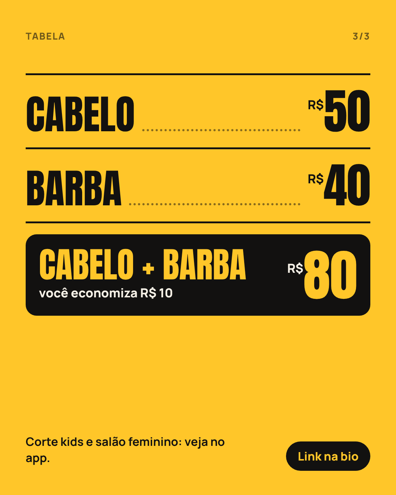
Legenda
Agendar na ED leva 3 toques: link da bio, serviço e hora, confirmar. Arrasta pra ver a tabela. Cabelo R$ 50, barba R$ 40, cabelo + barba R$ 80.
1080 × 1350 px · arquivos na pasta artes.
ED BARBEARIA × HOUSE DO CREATOR17
Feed · A3 · 21/11
A3 · Quem é o Ed
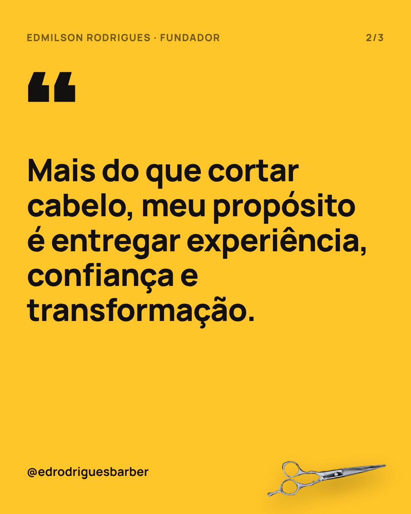
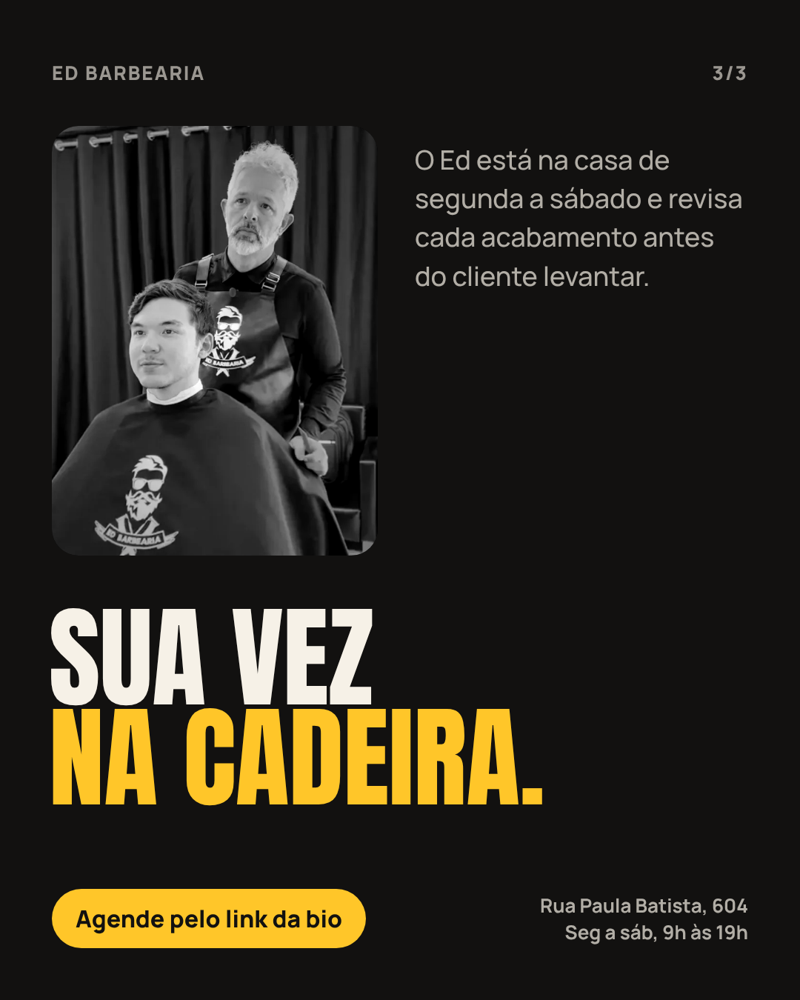
Legenda
Quem senta na cadeira da ED, volta. O Ed está na casa de segunda a sábado e revisa cada acabamento antes de você levantar. Sua vez: link na bio.
1080 × 1350 px · arquivos na pasta artes.
ED BARBEARIA × HOUSE DO CREATOR18
Feed · A4 · 26/11
A4 · Qual corte é o seu
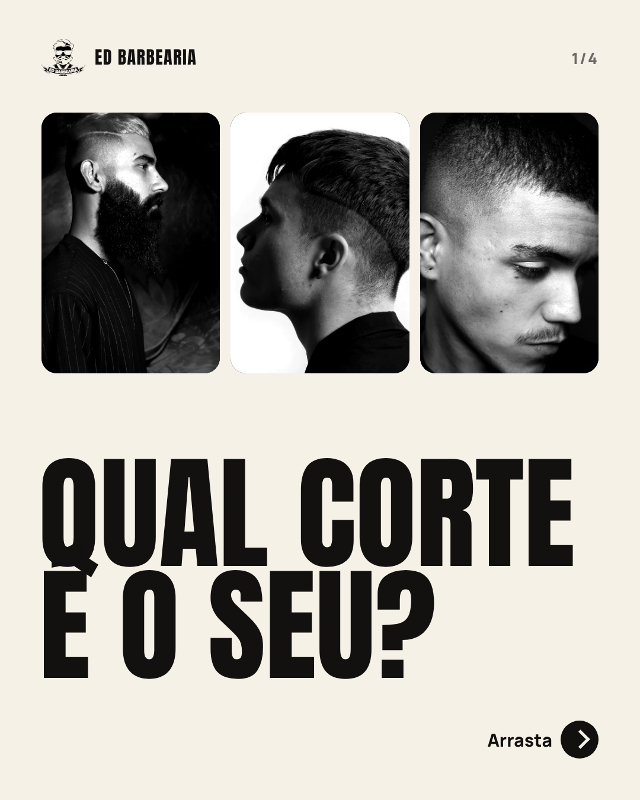
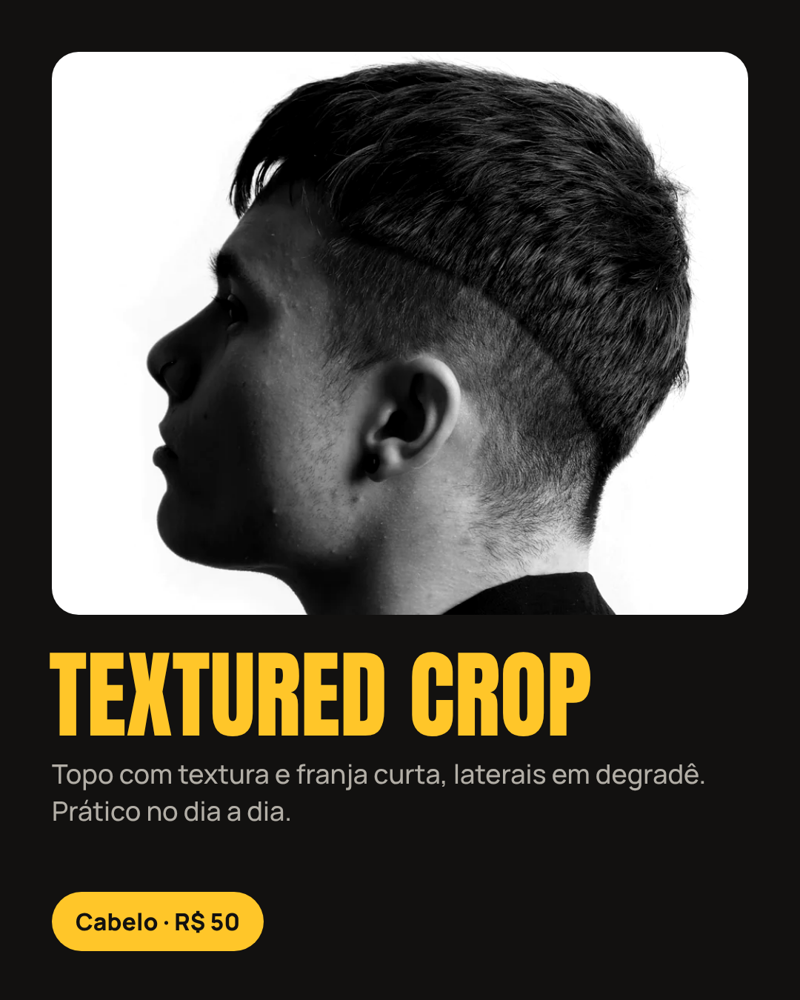
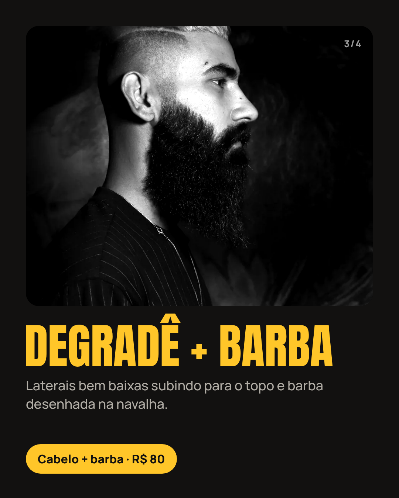
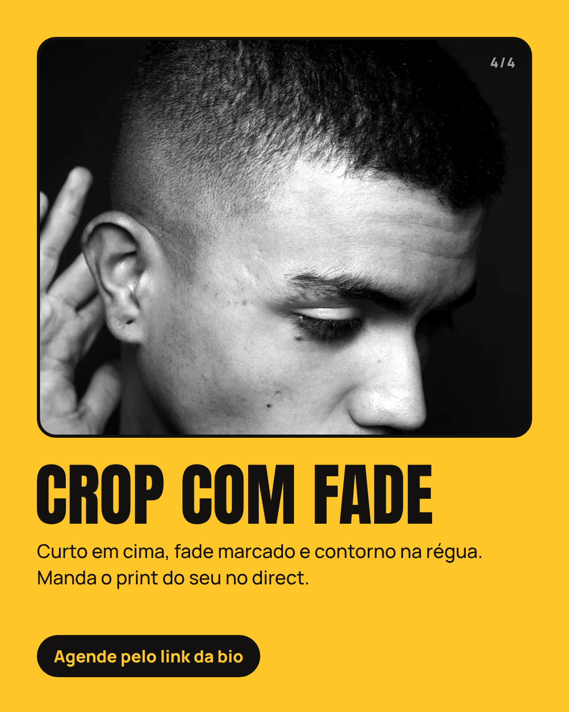
Legenda
Qual corte é o seu? Textured crop, degradê com barba ou crop com fade. Comenta o número e manda o print do seu corte no direct. Agende pelo link da bio.
1080 × 1350 px · arquivos na pasta artes. As fotos dos cortes são provisórias: trocar pelas do ensaio de 19/11.
ED BARBEARIA × HOUSE DO CREATOR19
Perfil · Bio e destaques
Perfil novo no ar em 09/11.
Bio nova (até 150 caracteres)
ED BARBEARIA | Casa Amarela, Recife
✂️ Degradê, barba, kids e salão
🗓️ Seg a sáb, 9h às 19h
🎟️ 50% no 1º corte: seg a qua, pelo app
👇 Agende em 1 toque
Link da bio: landing page da ED (agendar, WhatsApp e mapa num lugar só).
8 destaques, sem repetir
Sai o destaque duplicado “Curso / CURSO”. O conteúdo de aluno vai só pro destaque CURSO, e o feed fala com o cliente.
Fixados A1 (campanha), A2 (como agendar) e A3 (o Ed). O post “Estamos contratando” sai dos fixados e vai pro destaque.
ED BARBEARIA × HOUSE DO CREATOR20
Relatório · 30/11
O que a gente vai medir.
No dia 30 sai o relatório. O que funcionou vira pauta de dezembro, o mês mais cheio do ano.
Alcance do mês
Contas alcançadas e de onde vieram
Seguidores
Ganhos no mês, partindo de 3.199
Reels
Views de R1 a R7, comparando com a média de 600 a 2,6 mil
Link da bio
Cliques no link e no WhatsApp
Agendamentos
Total do mês no app e só de seg a qua (pedir o número ao Ed)
Campanha
Quantos clientes usaram os 50% no 1º corte
ED BARBEARIA × HOUSE DO CREATOR21
Próximos passos
Aprovou, a gente grava.
01
Aprovar a pauta
Ed aprova este plano na reunião de 05/11.
02
Confirmar feriado
Se a ED abre em 20/11 (Consciência Negra).
03
Clientes da gravação
2 clientes agendados para cada visita.
04
Equipe nos stories
Definir quem posta os stories de cada dia.
Todo conteúdo é aprovado antes de ir ao ar. Dúvidas e ajustes: WhatsApp (81) 98355-4583 · @housedocreator
ED BARBEARIA × HOUSE DO CREATOR22